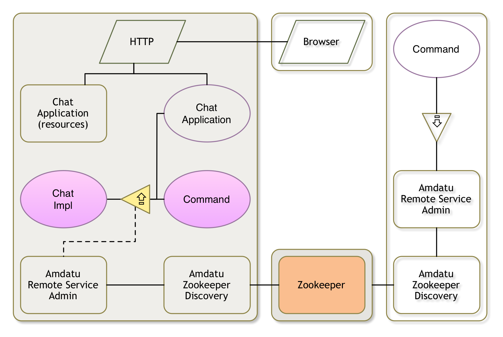

Zookeeper Server

Distributed OSGi
Distributed OSGi is almost unbelievably easy to use. To export a service from a framework, all you have to do is set a simple service property:
service.exported.interfaces=*
The Distribution Provider will detect such services and make them available to other frameworks. To which frameworks they are made available depends on the Topology Manager. A Topology Manager orchestrates a cluster of computers by listening to the life cycle of services and using some policy how to distribute these services over the cluster. The Topology Manager uses the Remote Service Admin service to export and import services. The Topology Manager also uses the Remote Service Admin specification for the publication and discovery of the exported services.
The most common Topology Manager is the promiscuous one. This Topology Manager exports all exported services (with the magic service property) and imports all exported services.
In OSGi enRoute there we include the Amdatu implementation, which is the R6 Reference Implementation. By default the discovery is based on Multi cast DNS. However, in this tutorial we will use the Zookeeper discovery because lots of networks nowadays disable multicast.
In the Zookeper mode, an agent will register itself in Zookeeper and at the same time listen to registrations from other agents. This way each agent can find all other agents.
In this section we will export the service and setup a Zookeeper server. Any framework that will use this Zookeeper server for discovery will be able to see all the exported services from that framework.
Setting up a Zookeeper server
Probably the easiest way is to download the Zookeeper distribution and start a server from the command line. However, it is much more fun to stay in Bndtools. We will therefore create a server in our local framework.
Therefore, create a new project osgi.enroute.examples.zookeeper.provider (use your own namespace of course but end in .provider). Then we need to replace the ZookeerImpl class with the following code:
package osgi.enroute.examples.zookeeper.provider;
import java.io.File;
import org.apache.zookeeper.server.ServerConfig;
import org.apache.zookeeper.server.ZooKeeperServerMain;
import org.osgi.framework.BundleContext;
import org.osgi.service.component.annotations.Activate;
import org.osgi.service.component.annotations.Component;
import org.osgi.service.component.annotations.Deactivate;
@Component(name = "osgi.enroute.examples.zookeeper")
public class ZookeeperImpl extends ZooKeeperServerMain {
private Thread thread;
private ServerConfig config;
@Activate
void activate(BundleContext context) {
File dir = context.getDataFile("zookeeper");
config = new ServerConfig();
config.parse(new String[] { "6789", dir.getAbsolutePath() });
thread = new Thread(this::zk, "osgi.enroute.examples.zookeeper");
thread.start();
}
@Deactivate
void deactivate() {
shutdown();
thread.interrupt();
}
public void zk() {
try {
runFromConfig(config);
} catch (Exception e) {
e.printStackTrace();
}
System.out.println("ZK Exiting");
}
}
This code just binds a Zookeeper server life cycle to the component. It starts a thread for the server when activated and it shuts the server down when deactivated.
Build
The code will not compile, we need the org.apache.hadoop.zookeeper bundle.
You can add this bundle from Maven Central. Go to the search.maven.org view
and search for org.apache.hadoop.zookeeper. Click on the version number and copy the
<dependency/> element. Then paste this in the <dependencies/> element in the
cmf/central.xml file.
Make sure to touch (change and save the cnf/build.cnf file) to refresh the workspace.
Now double click the bnd.bnd file and select the Build tab. Then drag the
org.apache.hadoop.zookeeper bundle from the Central repository on the Build Path list.
If you then go to the Source tab you should see the following -buildpath:
-buildpath: \
osgi.enroute.base.api, \
org.apache.hadoop.zookeeper;version=3.3.6
In certain cases the file is not downloaded yet and you get compile errors. Wait a bit and clean all projects.
Command
It would be convenient if we could check nodes in Zookeeper. We therefore could add the following command:
package osgi.enroute.examples.zookeeper.provider;
import java.io.IOException;
import java.util.List;
import org.apache.zookeeper.ZooKeeper;
import org.osgi.service.component.annotations.Activate;
import org.osgi.service.component.annotations.Deactivate;
import org.osgi.service.component.annotations.Component;
import osgi.enroute.debug.api.Debug;
@Component(
property = {
Debug.COMMAND_SCOPE + "=zk",
Debug.COMMAND_FUNCTION + "=zk",
Debug.COMMAND_FUNCTION + "=ls",
Debug.COMMAND_FUNCTION + "=data"
},
service = Command.class
)
public class Command {
private ZooKeeper zk;
public String zk() {
return
"zk help\n"
+ "ls <path> list children\n"
+ "data <path> show data of node\n";
}
@Activate void activate() throws IOException {
this.zk = new ZooKeeper("localhost:6789", 10000, null);
}
@Deactivate void deactivate() throws Exception {
this.zk.close();;
}
public List<String> ls(String path) throws Exception {
return zk.getChildren(path, false);
}
public String data(String path) throws Exception {
byte[] data = zk.getData(path, false, null);
return new String(data, "UTF-8");
}
}
Running
We need to create a bndrun file now, let’s call it zk.bndrun. Double click this file and select the Run tab. Drag the osgi.enroute.examples.zookeeper.provider bundle from the Available Bundles list to the `Run Requirements list. You should also add the Gogo command and shell bundle so we can take a peek at the store.
Resolve.
Since this is Zookeeper we should pay attention to the persistence. A Zookeeper node keeps a database that is synchronized with other Zookeepers. In this bundle we store the Zookeeper database in the Bundle’s private storage area. By default this area is cleaned when the framework starts up. We should therefore keep the persistence area between restarts. You can do this by adding the following line to the Source tab of your bndrun file.
-runkeep: true
We’re now ready to roll, save the bndrun file and click on the Run button in the Run tab.
We now have a Zookeper server running that we can use as the discovery server for distributed OSGi.
All Zookeepers keep their own zoo in /zookeeper. We can therefore now execute the following command:
g! zk:ls /
zookeeper
g! zk:ls /zookeeper
quota
Not very useful yet but we’re preparing for the (near) future.